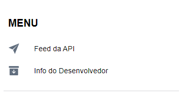

<ion-header [translucent]="true">
    <ion-toolbar>
        <ion-title>Slides de apresentação</ion-title>
    </ion-toolbar>
</ion-header>

<ion-content [fullscreen]="true" class="corpo">
    <swiper-container [loop]="true" [pagination]="true">
        <swiper-slide>
            <p>Disciplina de Programação Móvel <br> Nome: João Marcos <br>Professor: Marcelo
                Loutfi</p>
        </swiper-slide>
        <swiper-slide></swiper-slide>
        <swiper-slide>Esse APP realiza o acesso a uma API implementando um feed com uma lista dos principais personagens
            do show. <br> <br>
            <a href="https://rickandmortyapi.com/" target="_blank">Rick and Morty API</a>
        </swiper-slide>
        <swiper-slide>Após logar, você entrará no feed do APP e na esquerda haverá um menu de navegação.</swiper-slide>
        <swiper-slide></swiper-slide>
    </swiper-container>

    <ion-grid>
        <ion-row>
            <ion-col><ion-button expand="block" [routerLink]="['/login']">Sair</ion-button></ion-col>
            <ion-col><ion-button expand="block" [routerLink]="['/login']" (click)="naoExibirMais()">Não exibir
                    mais</ion-button></ion-col>
        </ion-row>
    </ion-grid>
</ion-content>